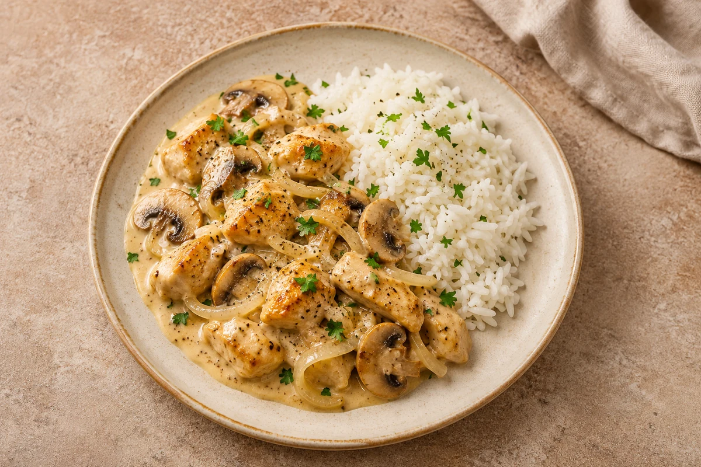

Comfort
Chicken Stroganoff
Diced chicken and mushrooms in a creamy mustard sauce, served with rice. Serves 2.
Estimated total: About 55 min total
person
Ingredient quantities update automatically

Ingredients
Method
- Heat the olive oil in a non-stick frying pan over a medium heat. Add the sliced onion and cook for around 15 minutes until completely softened, adding a splash of water if it starts to stick.
- Add the crushed garlic and cook for 2–3 minutes, then add the butter.
- Once the butter starts to foam, add the sliced mushrooms and cook for around 5 minutes until softened.
- Season the onions and mushrooms with salt and pepper, then transfer to a plate.
- Put the flour in a bowl with a generous pinch of salt and pepper. Add the diced chicken and toss to coat.
- Add the chicken to the pan, adding a little more oil if needed. Fry for 5–7 minutes, turning regularly, until golden on the outside. It will finish cooking in the sauce.
- Meanwhile, cook the rice according to the packet instructions, timing it to finish with the stroganoff.
- Return the onions and mushrooms to the pan. Whisk together the crème fraîche, English mustard and chicken stock, then stir into the chicken.
- Simmer gently for around 5–8 minutes, stirring occasionally, until the sauce has thickened and the chicken is cooked through. Cut into the largest pieces to check they are steaming hot throughout with no pink meat. Continue cooking if needed. Stir through the parsley, check the seasoning and serve with the rice.
Tips & leftovers
Storage & leftovers
Cool rice as quickly as possible, ideally within 1 hour, and refrigerate in shallow portions. Eat the rice, and any leftovers mixed with it, within 24 hours. Keep other cooked components separate and use within 48 hours. Keep rice separate from the stroganoff. Label the container with the recipe name and the date and time it was made; follow any shorter ingredient use-by or opened-pack instructions.
Freezing
Freezing not recommended for the finished crème fraîche stroganoff. Keep any rice separate and follow the shorter rice storage limit.
Reheating
Reheat rice only once until steaming hot throughout and eat immediately. Heat other cooked components thoroughly, keeping cold toppings separate. Heat the chicken sauce gently and stir; avoid vigorous boiling that can split the dairy.
Substitutions
Use chicken breast as written. Soured cream gives a tangier, less heat-stable sauce than crème fraîche; stir it in gently. Chestnut mushrooms work instead of white mushrooms.
Keeping leftovers safe
Keep chilled food at 0–5°C and follow the shortest ingredient use-by or opened-pack instruction. Cool cooked leftovers in small portions and refrigerate within 2 hours. Reheat suitable cooked leftovers only once, until steaming hot throughout; ingredients already reheated in this recipe must not be reheated again. Serve chilled desserts cold. Freezing recommendations and any exceptions for a base prepared without cream or prawns are explained in this recipe’s Freezing note. Cool rice quickly, ideally within 1 hour, refrigerate and use within 24 hours. Do not reheat rice that has already been reheated, including a heated microwave pouch.
Food-safety guidance: Food Standards Agency: chilling and freezing · reheating leftovers · cooked rice.